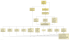

|
|||||||||
| PREV PACKAGE NEXT PACKAGE | FRAMES NO FRAMES | ||||||||
See:
Description
| Interface Summary | |
|---|---|
| AnimationListener | CAnimation listener. |
| AnimationObject | A general interface for objects that perform a sequence of animation steps. |
| CompositeAnimationObject | A composite animation object is an animation object that contains several child animation objects. |
| Class Summary | |
|---|---|
| AbstractAnimationObject | Abstract base class for animation objects. |
| AbstractCompositeAnimationObject | Base class for composite animation objects. |
| AnimationBuilder | Creates animation from one subject class to another class selected by the user. |
| AnimationFactory | Creates several types of animation objects. |
| AnimationListenerAdapter | Adapter from animation listener to Graph2DView. |
| AnimationPlayer | Plays animations. |
| CompositeAnimationFactory | Factory that creates composite animation objects. |
| MockAnimationObject | Mock for animation object tests. |
| TestCompositeAnimationObject | Tests composite animation object. |
| TestMockAnimationObject | Tests mock animation object. |
This package contains classes for animating graph elements. The y-files library (see www.yworks.com) that is used by IDEA for creating and displaying graphs already includes an animation system, but it is not usable in some cases due to a bug in the y-files wrapper implemented in the IDEA open API.
The classes in this package are inspired by the y-files animation system. In some aspects this implementation is simpler since it is specialized for usage in this plugin.
This static class diagram shows the animation classes and their relations: .
The central concept for animation is the AnimationObject interface
that is used for every single animated object. There are several implementations of this interface for
specifying zoom animations, fade-in/fade-out of nodes and edges, morphs of nodes and edges and some other types.
For animating several nodes or edges simultaneously, composite animations can be created. There are two main
implementations of the CompositeAnimationObject interface:
Concurrency and Sequence. By adding atomic edge and or node animations to such composite animations and combining
several composite animations by using other composite animation objects, complete animation sequences containing
hundreds of single steps can be created.
|
|||||||||
| PREV PACKAGE NEXT PACKAGE | FRAMES NO FRAMES | ||||||||